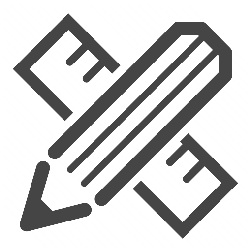
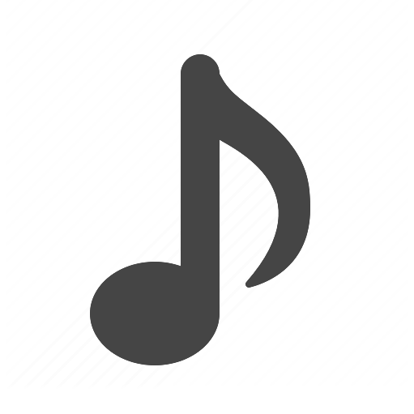
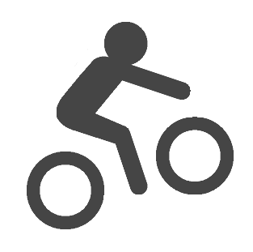

Borned in Beijing, I graduated from Peking University with a Bachelor of Computer Science. I specialized in Data Mining & Information Visualization and focused on developing interfaces for human to better explore and interact with data. Instead of just focusing on pure programming, I’m also interested in users, in creating seamless, engaging experience for users. That’s why I choose UX.
Like the icon I designed(Infinity within Finity), I’m always finding and pursuing “The Possibility within the Certainty”. Being a pioneer instead of a follower is what I believe and what I want to be.
Currently I’m a Master student in Human-Computer Interaction in Georgia Tech and gained Graduate Research Assistant position. I also start my freelance as a designer and front-end developer. Prior to this, I interned as a Interaction Designer at Tencent & UX Intern at Microsoft Research Asia. I participated in the loop of user research, design, front-end implement and back-end algorithm.
My Design Philosophy
Design communicates obvious function: Use logical thinking to prioritize information, communicate clear, obvious, intuitive functions and provide seamless guide for users of how to interact with it.
Design should incentive engagement and motivation: Use empathy to understand the end users and their needs and create moments of delight for people who encounter it.
Understanding the core principles, abilities, and constraints of advanced technology(e.g. Machine learning, Image recognition) helps me improve the rationality of design process. Accumulation in web and iOS development facilitates the communication between designer and developer.
Things I love...

Design
UX and UI - Adobe Photoshop, Illustrator, InDesign, Sketch.
Photography
Instead of under cultural bias, I prefer to embrace the multiplicity of life. I believe, where there is the possibility, there is creativity.

Music
Use rhythm in piano, posture in ballet as a way to understand and express emotions. National certificated at the age of 12!
Front-end Development
Experienced coding for iOS App in Swift, Objective C; and coding for web in JavaScript/ TypeScript, D3, PHP, HTML, CSS.
Travel
Traveling around the world has made me more open minded and broadened my perspective on the design industry.

Sports
I love all kinds of sports. I cycled 2000 km in summer with my 14 dear teammates. I’m the champion of Sit-up at Peking University Athletic Meeting. I also love rock climbing, diving, hiking...
About This Site
This site was designed and coded with help and suggestions from many. Thanks to Ben Li and Jason Wang for technical support. And Shaojing Shen for my profile photo.